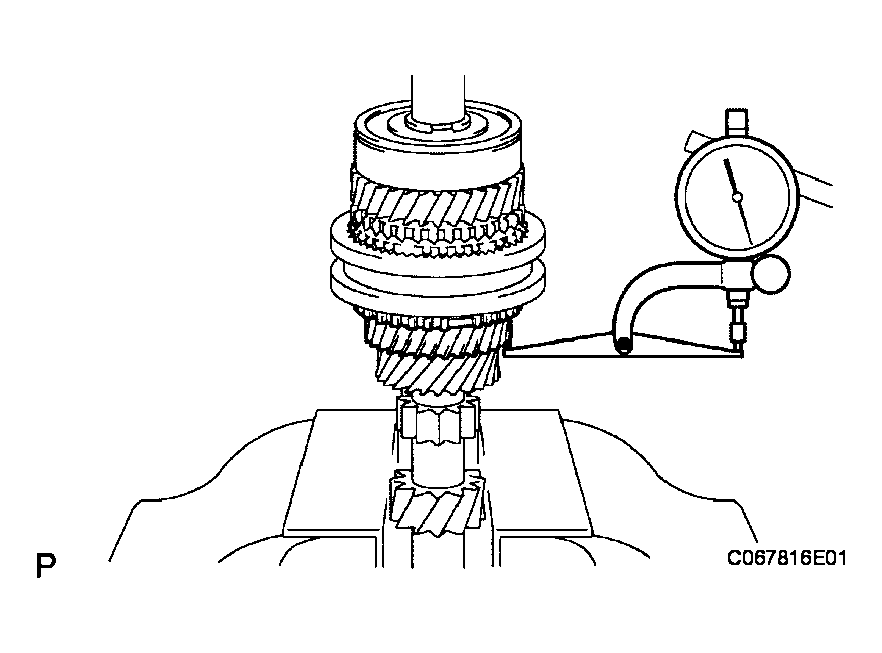
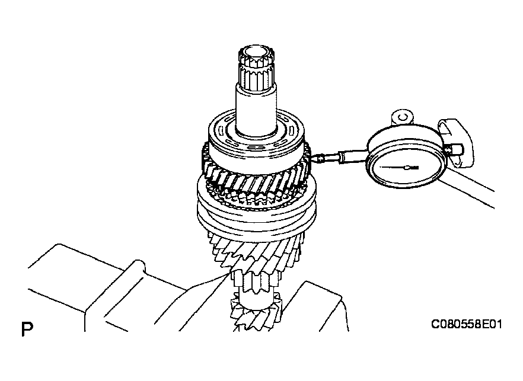
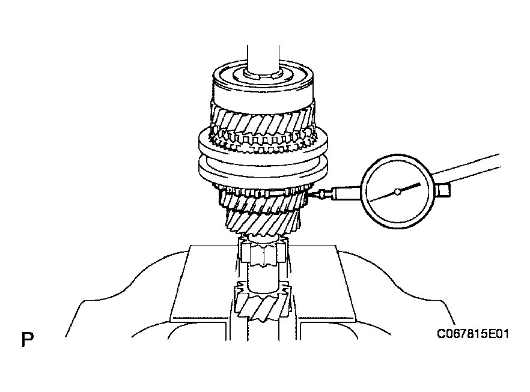
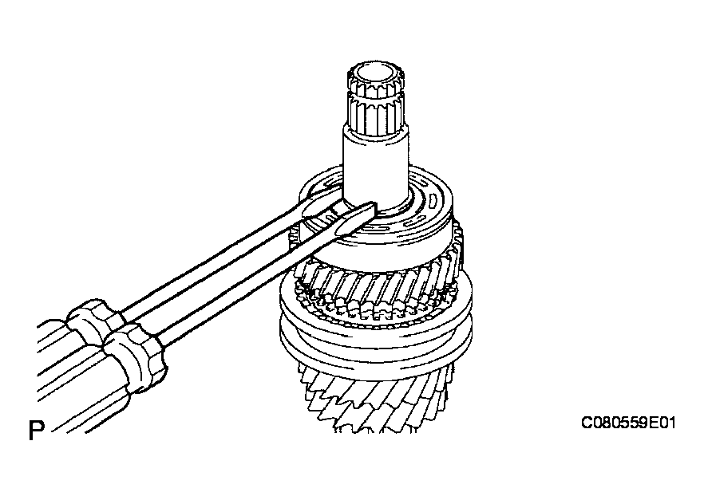
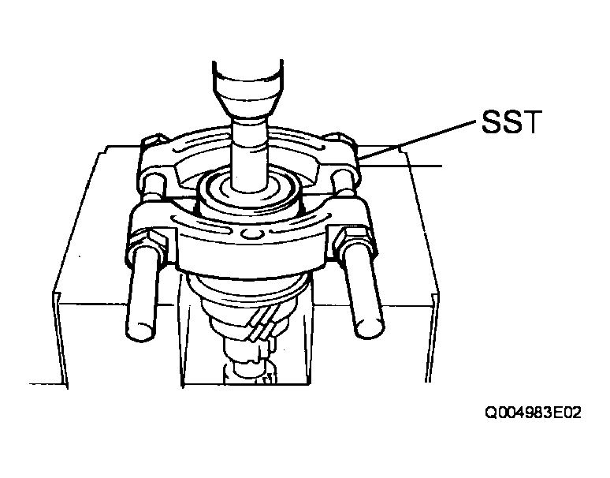
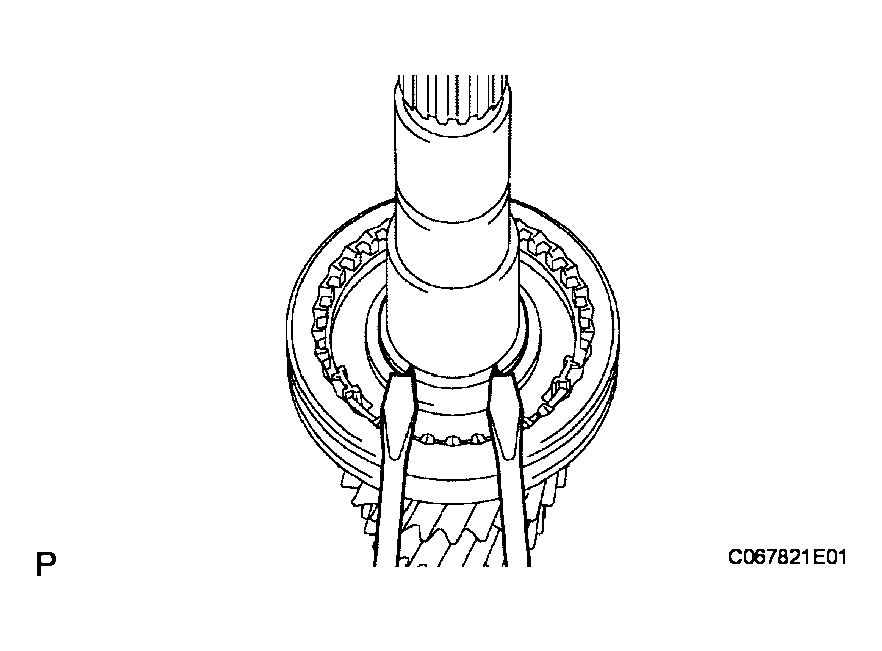
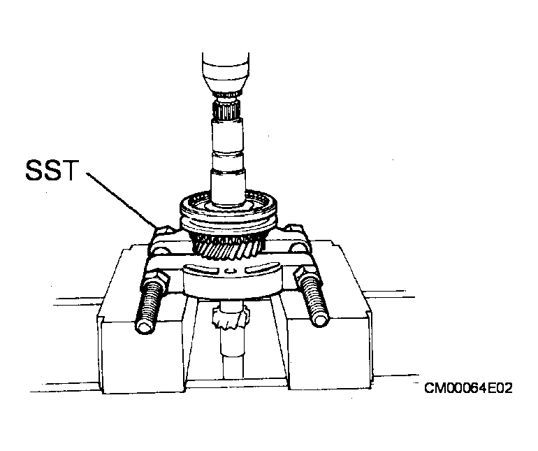
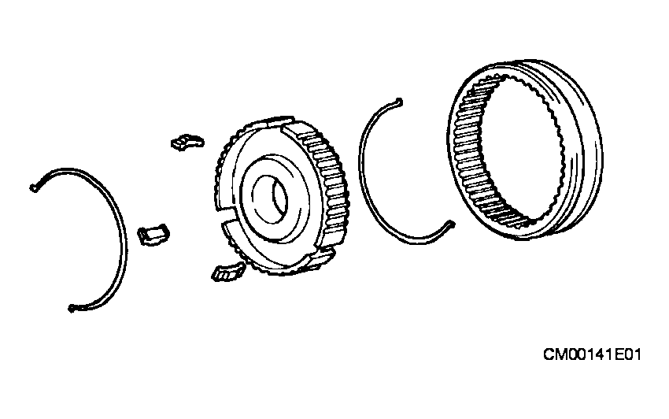

Input Shaft: Disassembly
- INSPECT 4TH GEAR THRUST CLEARANCE
- Using a feeler gauge, measure the thrust clearance.
Standard clearance: 0.1 to 0.55 mm (0.0039 to 0.0217 in.)
Maximum clearance: 0.55 mm (0.0217 in.)
If the clearance is greater than the maximum, replace the No. 2 transmission clutch hub, 4th gear or input shaft rear radial ball bearing.
- Using a feeler gauge, measure the thrust clearance.
- INSPECT 3RD GEAR THRUST CLEARANCE
- Using a dial indicator, measure the thrust clearance.

Courtesy of © TOYOTA, LICENSE AGREEMENT TMS1002Standard clearance: 0.1 to 0.35 mm (0.0039 to 0.0138 in.)
Maximum clearance: 0.35 mm (0.0138 in.)
If the clearance is greater than the maximum, replace the No. 2 transmission clutch hub, 3rd gear or input shaft.
- Using a dial indicator, measure the thrust clearance.
- INSPECT 4TH GEAR RADIAL CLEARANCE
- Using a dial indicator, measure than the radial clearance between the gear and shaft.

Courtesy of © TOYOTA, LICENSE AGREEMENT TMS1002Standard clearance: 0.009 to 0.050 mm (0.0004 to 0.0020 in.)
Maximum clearance: 0.050 mm (0.0020 in.)
If the clearance is greater the maximum, replace the gear, needle roller bearing or shaft.
- Using a dial indicator, measure than the radial clearance between the gear and shaft.
- INSPECT 3RD GEAR RADIAL CLEARANCE
- Using a dial indicator, measure the radial clearance between the gear and shaft.

Courtesy of © TOYOTA, LICENSE AGREEMENT TMS1002Standard clearance
GEAR RADIAL CLEARANCE REFERENCEBearing Specified Condition KOYO made 0.015 to 0.058 mm (0.0006 to 0.0023 in.) NSK made 0.015 to 0.056 mm (0.0006 to 0.0022 in.) If the clearance is not within the specification, replace the gear, needle roller bearing or shaft.
- Using a dial indicator, measure the radial clearance between the gear and shaft.
- REMOVE 4TH GEAR
- Using 2 screwdrivers and a hammer, tap out the input shaft rear bearing shaft snap ring from the input shaft.

Courtesy of © TOYOTA, LICENSE AGREEMENT TMS1002HINT:
Use a cloth to prevent the snap ring from springing away.
- Using SST and a press, press out the input shaft rear radial ball bearing and 4th gear from the input shaft.

Courtesy of © TOYOTA, LICENSE AGREEMENT TMS1002SST 09950-00020
NOTE:- Do not tighten SST excessively.
- Support the input shaft assembly by hand so that it will not drop.
- Using 2 screwdrivers and a hammer, tap out the input shaft rear bearing shaft snap ring from the input shaft.
- REMOVE 4TH GEAR NEEDLE ROLLER BEARING
- Remove the 4th gear needle roller bearing and 4th gear bearing spacer from the input shaft.
- REMOVE NO. 2 SYNCHRONIZER RING (for 4th Gear)
- Remove the No. 2 synchronizer ring from the No. 2 transmission clutch hub.
- REMOVE 3RD GEAR
- Using 2 screwdrivers and a hammer, tap out the No. 2 clutch hub setting shaft snap ring from the input shaft.

Courtesy of © TOYOTA, LICENSE AGREEMENT TMS1002HINT:
Use a cloth to prevent the snap ring from springing away.
- Using SST and a press, remove the No. 2 transmission clutch hub and 3rd gear from the input shaft.
SST 09950-00020

Courtesy of © TOYOTA, LICENSE AGREEMENT TMS1002NOTE:- Do not tighten SST excessively.
- Support the input shaft by hand so that it will not drop.
- Using 2 screwdrivers and a hammer, tap out the No. 2 clutch hub setting shaft snap ring from the input shaft.
- REMOVE NO. 2 SYNCHRONIZER RING (for 3rd Gear)
- Remove the No. 2 synchronizer ring from the 3rd gear.
- REMOVE 3RD GEAR NEEDLE ROLLER BEARING
- Remove the 3rd gear needle roller bearing from the input shaft.
- REMOVE NO. 2 TRANSMISSION HUB SLEEVE
- Remove the No. 2 transmission hub sleeve, 3 No. 2 shifting keys and 3 No. 2 shifting key springs from the No. 2 transmission clutch hub.

Courtesy of © TOYOTA, LICENSE AGREEMENT TMS1002NOTE: Use a cloth to keep the shifting key and shifting key from spring springing away.
- Remove the No. 2 transmission hub sleeve, 3 No. 2 shifting keys and 3 No. 2 shifting key springs from the No. 2 transmission clutch hub.